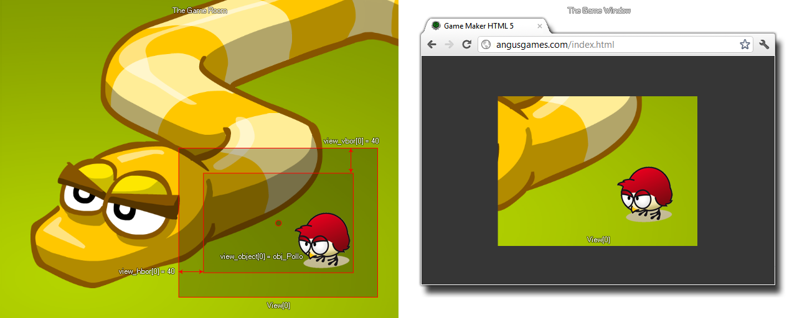

view_object[0...7]
返回： 实数
有了这个变量，你可以获取（或设置）在任何时候都保持指定在视野（0-7）的物体。如果物体有多个实例，只会跟随其中一个（通常是创建的第一个，但并不保证）。你也可以指定一个单独的实例id给这个变量，视野会跟随这个特别的实例。阻止视野跟随，你可以设置这个变量为特别的 关键词 noone.

注意: 你可以使用 view_hborder 和 view_vborder 函数设置视野开始移动之前实例移动的距离。
if instance_exists(obj_Player)
{
view_object[0] = obj_player;
}
上述代码将检测如果物体 “obj_Player”存在一个实例，它将设置 view[0] 跟随那个实例。